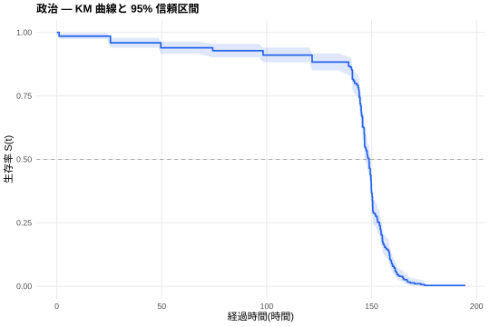
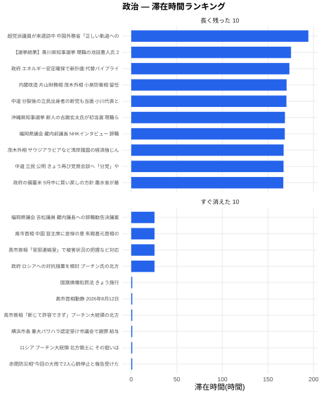
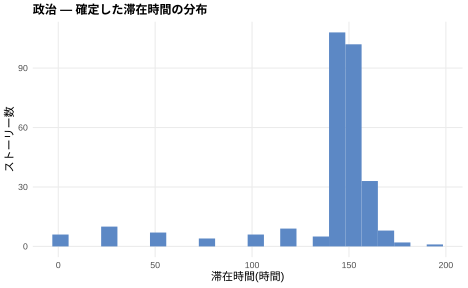

滞在時間ランキング

滞在時間の分布

出典・定義
- 出典
- NHK ニュース RSS(政治)。各見出しの著作権は日本放送協会に帰属します
- 観測方法
- RSS を約 1 時間間隔でスナップショットし、見出しがフィードに滞在した時間を記録
- 滞在時間の定義
- 消えた見出し = 最終観測 − 初観測 + 1 時間(上限側慣例)。まだ載っている見出しは右打ち切りとして扱う
- 半減期
- カプラン・マイヤー生存曲線 S(t) が 0.5 以下となる最小の時刻(生存時間の中央値)
- 観測期間
- 2026-08-19 14:16:00 〜 2026-09-04 18:20:00(UTC)・スナップショット 196 回。最終取得: 2026-09-04 18:20:00